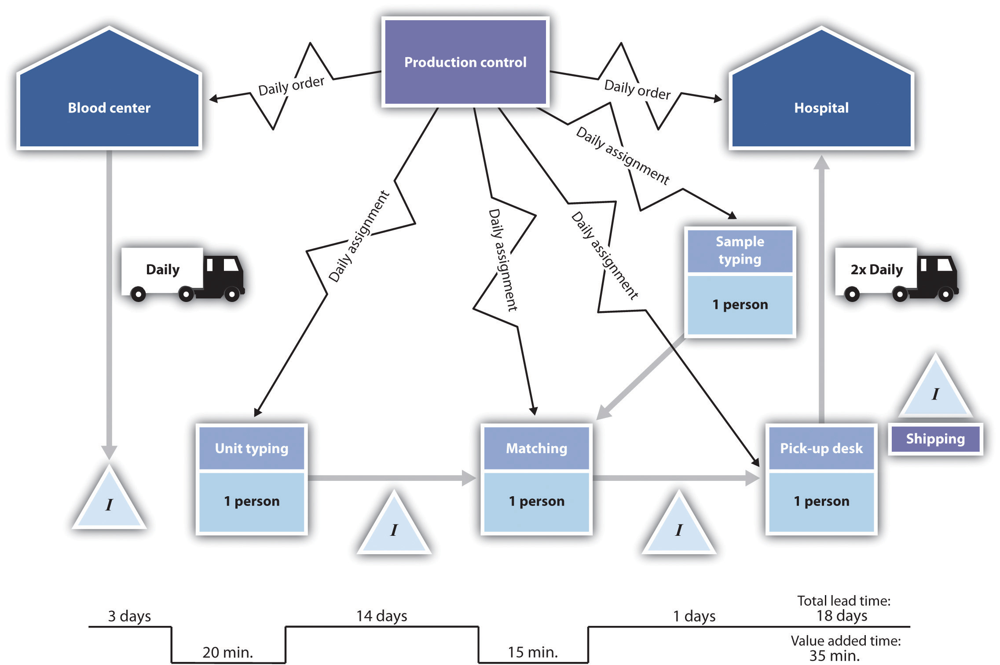

Waste is worse than loss. The time is coming when every person who lays claim to ability will keep the question of waste before him constantly. The scope of thrift is limitless.Thomas Edison, “Thomas A Edison Quotes,” Brainy Quote, accessed February 5, 2012, www.brainyquote.com/quotes/quotes/t/thomasaed149058.html.
Thomas A. Edison
The most dangerous kind of waste is the waste we do not recognize.Shigeo Shingo, “Lean Quote: A Simple Quote…An Important Idea…,” Matt Hrivnak.com, accessed February 5, 2012, matthrivnak.com/2008/03/19/a -simple-quotean-important-idea.
Shigeo Shingo
Another organization-wide movement that has become popular at a global level during the last two decades is the concept of lean thinkingA management approach that seeks to eliminate all forms of waste from operations.. This concept was first introduced to American businesspeople in the book The Machine That Changed the World: The Story of Lean Production—Toyota’s Secret Weapon in the Global Car Wars That Is Now Revolutionizing World Industry.James P. Womack, Daniel T. Jones, and Daniel Roos, The Machine That Changed the World: The Story of Lean Production—Toyota’s Secret Weapon in the Global Car Wars That Is Now Revolutionizing World Industry (New York, Harper Perennial, 1990). This book focused on the global automobile industry. It highlighted the significant differences in productivity between Japanese firms, Toyota in particular, and their American and European rivals. At the time the book was written, Toyota was half the size of General Motors; today, on a global basis, Toyota is larger than General Motors. The book highlighted the approach adopted by Toyota, which is, as articulated by Taiichi Ohno, its developer, centered on “the absolute elimination of waste.”
Although lean is most closely associated with Toyota, its central principles are applicable for any small and midsize enterprise. Audubon Media Corporation is a publisher of cookbooks. It adopted a program that included a variety of lean techniques. In a two-year period, it increased sales by 25 percent without increasing staffing, reduced lead time by at least 50 percent, and increased available floor space by 20 percent through inventory reduction and more efficient redesign. Corporate Image, a manufacturer of packaging, adopted lean methods and reduced lead times by over 35 percent and reduced costs by nearly $180,000 in one year.Jim Black, “Kaizen (Continuous Improvement) for Small- and Medium-Sized Companies,” CIRAS News 33, no. 2 (1999), accessed February 4, 2012, www.ciras.iastate.edu/publications/management/Kaizen.asp.
Lean thinking is predicated on five major principles.“The Five Principles of Lean Thinking,” Cardiff University, accessed February 4, 2012, www.cardiff.ac.uk/lean/principles/index.html. The first principle can be summarized as follows: know who your customers are and know how they define value. This principle coincides nicely with the underlying philosophy of the quality movement, namely, placing the customer first. Without understanding what the customer wants and what the customer values, an organization runs the risk of producing a wasteful quantity of goods and services that the customer does not want or need.
The second principle of lean thinking centers on determining and visualizing the value stream. The value streamThe entire set of activities associated with the production of goods and services. is the entire set of activities associated with the production of goods and services. The goal of such mapping is to identify any and all activities that provide no value to the customer. Once those nonvalue activities have been identified, they are to be eliminated. Students are required, every semester, to go to their advisor and begin the process to register for the next semester or prepare for graduation. Imagine mapping out every step in that process. Having done that, colleges and universities could probably find some steps or activities that do not add value. In a lean operation, those steps would be eliminated. One could also think in terms of the process that most patients face when going to some type of medical facility. They are often required to fill out multiple forms that require the same information. In Figure 13.5 "Value Stream Map for Supplying Hospitals with Blood", we provide an example of a value stream map for the process of supplying hospitals with blood.
Figure 13.5 Value Stream Map for Supplying Hospitals with Blood
Source: Derived from Value Stream, http://facultyweb.berry.edu/jgrout/processmapping/Value_Stream/value_stream.html
The third principle of lean thinking argues that every effort should be made to make the remaining steps flow. The term flow here refers to the notion that from design to delivery to the customer, all steps and activities should be structured in such a way that there will be minimal or nonexistent downtime, waste, or waiting within or between the steps.“The Principles of Lean Thinking: Tools and Techniques for Advanced Manufacturing,” Industial Technology Centre, accessed February 4, 2012, www.itc.mb.ca/downloads/resources_by_topic/princ_lean%20thinking/PrinciplesofLeanThinkingRevD2004.pdf. This is perhaps the most challenging of all the five principles of lean thinking. To make operations flow in a seamless manner often requires substantive changes in production and service processes. In fact, it may require substantive changes to the structure of a business.
The fourth principle involves a pull systemThe production of the goods and services are triggered by customer demand. triggered by customer needs. The term pull means that the production of goods and services is triggered by customer demand. This aspect of lean is what is commonly referred to as just-in-time inventory. The central idea is that the entire value stream is fired up only by customer demand. Thus inventory throughout the system is minimized.
The fifth and last principle is pursuing perfection. This clearly shows that lean thinking is not totally separate and divorced from the concepts of total quality management or Six Sigma. This last principle advocates that removing the impediments to quality will mean a significant reduction in waste. Like Crosby’s work, lean advocates often talk of striving for zero defects.
One of the first steps in any lean program is identifying where waste exists within the system. Taiichi Ohno and Shigeo Shingo, the two cofounders of the Toyota Production System, identified seven possible sources of waste: transportation, inventory, motion, waiting, overprocessing, overproduction, and defects. (A nice mnemonic to remember these seven sources is TIM WOOD.) Table 13.4 "Seven Sources of Manufacturing Wastes" identifies and gives examples of the original seven sources of waste used throughout Toyota.
Table 13.4 Seven Sources of Manufacturing Wastes
| Type of Waste | Description | Examples |
|---|---|---|
| TransportationThe movement of components and parts that is not associated with their transformation. | The movement of components and parts not associated with their transformation. Unnecessary movement (that which is not required by the customer) runs the risk of damage. | When looking for suppliers, Toyota takes into consideration their proximity to its production plants. Toyota plants are designed so that suppliers can bring their items directly to where they will be used on the factory floor. |
| InventoryMaterials not being actively used to meet customer demand represent a waste of capital. | The three types of inventory—raw materials, work in process, and finished goods—are all forms of investment. When these inventories are not being actively used to meet customer demand, they represent a waste of capital. | Just-in-time inventory strives to produce inventory according to the demand of the customer. Every effort is made to smooth production processes so that there is no need to produce any component in bulk quantities. Many restaurants cook meals only when ordered by the customer. This minimizes leftovers. |
| MotionUnnecessary motion by employees and equipment. | This term refers to employees and equipment, not components or products. Unnecessary motion is a waste of time and money. Like transportation, it runs the risk of damage to the final product or the employees. | Excess movement by workers or machinery is to be avoided. Workers and equipment are positioned so that they are in close proximity and movements are minimized. Machines are sometimes grouped in a U-shape so that one worker can operate them with minimal movement. |
| WaitingComponents or products not being processed. | If components or products are not being processed, then there is waiting. This represents a waste of investment. | Eliminating this form of waste is the reason for the concept of “flow.” Production processes need to be redesigned to minimize the time spent waiting. Special paints are used that dry quickly so that vehicles can move on to the next processing step without having to wait. |
| OverprocessingA component or a product that requires more time to process than the standard estimate. | A component or a product that requires more time to process than the standard estimate represents a waste. This concept also involves the notion that using inappropriate or excessively complex manufacturing processes or tools also represent a form of waste. | The essence here can be summarized by KISS—keep it simple, stupid. This is a well-known engineering principle whereby “less is more.” The process can be accomplished with a simple machine preferable to a complex machine. Simplicity accomplishes the task, minimizes the chance for failure, and reduces waste. A classic example of this would be the engineers who were asked to determine the volume of a complex part. Some began by taking accurate measurements to compute the volume of some segments of the part. Another engineer simply tossed the part into a bucket of water and measured the volume of water displaced. |
| OverproductionProducing more than a customer wants at a particular point in time. | Producing more than the customer wants at a particular point in time is a source of waste. Some businesses have set up operations where they believe that production in large batches is the most economically efficient method. This generally means large inventory levels. Overproduction is seen by some as the driving force behind the other six sources of waste. Lean thinking tasks them to reexamine these basic assumptions. | A manufacturer has a good idea of the annual demand of a particular part. Setting up the machine that is used to produce this part is an expense proposition. Financial analysis indicates that the company should produce one batch of the part every quarter (three months’ worth of supply). A three-month supply of the part means that a considerable portion sits in inventory for a long period of time. This quantity of inventory may also mask any defects in manufacturing. It would take quite a while to go through this batch before one would realize that the batch might have had problems in production. A company that focused on reducing the setup cost of the machine could then produce smaller batches, which, in turn, would produce lower inventory levels and therefore catch quality problems earlier. |
| DefectsThe waste and expense of producing defects. | Defects in products produce expensive waste—rework costs, scrapping costs, or excess warranty costs. | Here is where lean thinking and quality management merge. Poor quality of product and service represents a dramatic waste. |
The continued references to the Toyota Production System might lead the reader to believe that lean thinking is appropriate only for the manufacturing environment. That would be profoundly misleading because lean has tremendous applicability to service, particularly in the areas of health care, banking, and retail. Some authors believe that these seven sources of waste are absolutely applicable to service environments.Michael George, Lean Six Sigma for Service: How to Use Lean Speed and Six Sigma Quality to Improve Services and Transactions (New York: McGraw-Hill, 2003), 76. Others have suggested that the original seven sources of manufacturing waste be modified to cover the service environment, as follows: delay, duplication, unnecessary motion, unclear communication, incorrect inventory, errors, and opportunity lost.“Seven Wastes of Service | Customer Perception,” Lean Manufacturing Tools, accessed February 5, 2012, leanmanufacturingtools.org/81/seven-wastes-of-service -customer-perceptio. These seven sources and corresponding examples are described in Table 13.5 "Seven Sources of Service Waste".
Table 13.5 Seven Sources of Service Waste
| Type of Waste | Description | Examples |
|---|---|---|
| DelayIn services, this corresponds to the waiting waste concept. | Any instance in which a customer must wait for any aspect of the service. | One walks into a fast-food restaurant and finds a long queue (line). Any service time spent in that queue is a delay. Another example of the delay would be waiting on the phone to speak to a sales representative. |
| DuplicationAnytime a customer must repeat any activity unnecessarily. | When a customer has to repeat any activity unnecessarily. | Patients in a medical facility who have to repeatedly fill out forms would be an example of duplication. A website requires customer input of information, but then the website crashes, causing the customer to reinput the information is another example. Such instances are extremely annoying to most consumers. |
| Unnecessary motionA customer is shuttled between a variety of operations and where each move does not substantially add to value. | A customer who is shuttled between a variety of operations and where each move does not substantially add to value. | A customer wishes to lodge a complaint. The customer calls the complaint department and then is moved from one sales representative to another. This type of frustration may cause customers to drop the service. |
| Unclear communicationThe failure to provide clear instructions for any stage of a service. | The failure to provide clear instructions for any stage of the service environment. | Unclear communication, particularly with respect to instructions to customers, is contained in the entire service experience. Examples would include instructions that are filled with jargon or that easily confuse customers. |
| Incorrect inventoryA product is not available to the customer, causing the customer to wait for it. | Services often have ancillary products. If a product is not available, the customer has to wait for it. | A customer places an online order for multiple items. At the time of the order, the customer is told that all the items are available and will be shipped at once. When the customer receives the order, not all the items are in the shipment, and some items are on backorder. “Murphy’s Law” would dictate that the items on backorder are the ones the customer most wanted. |
| ErrorsIn services, this corresponds to defects. | Any errors or mistakes associated with either the ancillary goods or the service itself. | Telling a customer that the repair service will arrive between 10 a.m. and 1 p.m. and then showing up at 4 p.m. is the type of error that few customers are willing to forgive or forget. |
| Opportunity lostAn engagement with the customer to a service environment that is a failure. | Every engagement with the customer in a service environment is an opportunity to succeed or fail. Failure can be associated with a bad behavioral interaction with the customer, ignorance about the service, or providing incorrect information to the customer. | Services differ from products in many ways. One of the most important is that quality services tend to be in real time. In manufacturing, one can test the product before it is shipped. This does not always occur in services. A few words from a rude clerk can describe the customer’s vision of the company. Subsequent apologies may do nothing to erase this negative image. Providing customers with the wrong information, even about minor details, can also destroy their perception of a company. |
Lean thinking uses several techniques to achieve its ends. We have mentioned value stream mapping. Other techniques include just-in-time inventory control, quick changeoverA program to reduce setup times to make it more attractive to produce in smaller batches. (a program to reduce setup times to make it more attractive to produce in smaller batches), KaisenA Japanese term that refers to any program that seeks small improvements on a regular basis rather than a huge quality initiative. (a Japanese term that refers to any program that seeks small improvements on a regular basis rather than a huge quality initiative), and visual managementA program where key metrics are presented visually to all personnel so they can be aware of any and all progress. (a program of visually presenting key metrics to all personnel so that they can be aware of any and all progress). One technique that has broad application in both manufacturing and service environments is known as the 5 Ss. The five Ss refer to Japanese terms for, in effect, housekeeping.“5S Check List,” Systems2win, accessed March 9, 2012, www.systems2win.com/solutions/5S.htm. The five Ss, which together strive for simplicity and neatness to improve efficiency and effectiveness, are as follows:
More and more businesses are realizing that lean thinking and quality are not two distinct management approaches but two extremely complementary models. One finds more and more references to a concept known as Lean Six Sigma, which is a program that combines aspects of both lean thinking and quality management. It recognizes that lean by itself cannot bring processes under control, and Six Sigma significantly reduces process time or capital investment.Michael George, Lean Six Sigma for Service: How to Use Lean Speed and Six Sigma Quality to Improve Services and Transactions (New York: McGraw-Hill, 2003), 6. Both approaches offer benefits to small businesses that cannot be ignored if these businesses want to remain viable in an increasingly competitive world.
Lean Process Improvement—Funny
(click to see video)A silent comedy to illustrate lean principles.
Building a Lean Culture
(click to see video)Lean requires change throughout an organization.
Lean Office: Applying Lean to Business Processes
(click to see video)Lean is not limited to manufacturing but can be applied to office management.
Introduction to Lean
A great introduction to lean concepts by a consulting firm.
www.leanthinking.info/aboutlean.html
Glossary of Lean Tools
Definitions of key terms.
www.shopwerkssoftware.com/lean_glossary.aspx
Bringing “Lean” Principles to Service Industries
The application of lean concepts to the service environment.
Achieving a “Lean Service” Breakthrough
An example of lean concepts applied to the service environment.